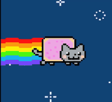

Sphinx Domain for Descibing Anything¶

- version
1.0a0
- copyright
Copyright ©2020 by Shengyu Zhang.
- license
BSD, see LICENSE for details.
The extension provides a domain named “any”, allows user creates directive and roles to descibe and reference arbitrary object by writing restructedText template.
Installation¶
Download it from official Python Package Index:
$ pip install sphinxnotes-any
Add extension to conf.py in your sphinx project:
extensions = [
# …
'sphinxnotes.any',
# …
]
Configuration¶
The extension provides the following configuration:
- any_predefined_schemas
(Type:
List[str], Default:['friend', 'book']) List of enabled predefeined Schema name.For the usage of predefeined schema, please refer to Predefined Schemas.
If you want to disable all predefeined schemas, set it to
[].- any_custom_schemas
(Type:
List[Dict[str,Any]], Default:[]) List of enabled custom Schema. For the way of writing custom schema, please refer to Writing Schema.
Functionalities¶
Schema¶
Before descibing any object, we need a “schema” to descibe “how to descibe the object”.
For extension user, “schema” is a python dict that can specific in conf.py.
See Configuration for details.
Writing Schema¶
An schema for descibing cat looks like this:
schema = {
'type': 'cat',
'fields': {
'id': 'catid',
'others': ['owner', 'height', 'width', 'picture'],
},
'templates': {
'role': '🐈{{ title }}',
'directive': """
.. image:: {{ picture }}
:align: left
:owner: {{ owner }}
:height: {{ height }}
:width: {{ width }}
{{ content | join('\n') }}"""
}
}
The aboved schema created a cat directive under “any” domain that
can descibe a cat.
The created directive accept only one argument, which indicates the name of object, aliases can be added on a new line after name, one alias per line.
The attributes of object can be indicates by directive options(a filed list).
- type
Type:
str, type of the object, it determines the name of the corresponding directive and role.- fields
Type:
Dict[str,Any], describe how many attributes the object has, it determines the options of corresponding directive, and the available variables when rendering template (see below)- others
Type:
List[str], list of name of non-special object attributes.The value will be one of options of created directive, and available as variable when rendering the template.
For example, if
['height']is specific, the created directive will has:height:option withdirectives.unchangedflag, and the{{ height }}variable is available when rendering template.- id
Type:
Optonal[str], name of the ID field, the value of ID of should be unique among whole documentation, when the object name is duplicated, user can still reference the correct object by ID.Same to
others, but the created directive option has flagdirectives.unchanged_required.
- templates
Type:
Dict[str,Any], descibes how directive and role will be show. We use Jinja as templating engine.- role
Template for rendering role’s interpreted text, the origin interpreted text appears as
{{ title }}variable when rendering.- directive
Template for rendering directive’s content. the only one argument of directive appears as
{{ name }}variable when rendering. the origin content appears as{{ content }}variable when rendering.Note
{{ content }}is a string list but not string.
Now we descibe a cat with the newly created directive:
.. any:cat:: Nyan Cat
Nyan_Cat
:catid: 1
:owner: prguitarman
:height: 200px
:width: 220px
:picture: _images/nyan-cat.gif
Nyan Cat is the name of a YouTube video uploaded in April 2011,
which became an internet meme. The video merged a Japanese pop song with
an animated cartoon cat with a Pop-Tart for a torso, flying through space,
and leaving a rainbow trail behind it. The video ranked at number 5 on
the list of most viewed YouTube videos in 2011. [#]_
.. [#] https://en.wikipedia.org/wiki/Nyan_Cat
It will be rendered as:
-
Nyan Cat¶ 
- owner
prguitarman
- height
200px
- width
220px
Nyan Cat is the name of a YouTube video uploaded in April 2011, which became an internet meme. The video merged a Japanese pop song with an animated cartoon cat with a Pop-Tart for a torso, flying through space, and leaving a rainbow trail behind it. The video ranked at number 5 on the list of most viewed YouTube videos in 2011. 1
Use the cat role under “any” domain to reference Nyan Cat:
Predefined Schemas¶
The extension provides some predefeined schemas for testing purpose and for light users:
- friend
The “friend” schema is used to descibe your friend, provides
frienddirective andfriendrole that helps you to contstruct your friend links.- book
The “book” schema is used to note your book have read.
Note
TO BE COMPLETED.